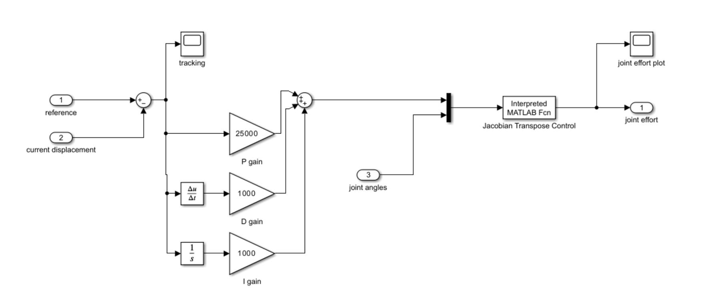
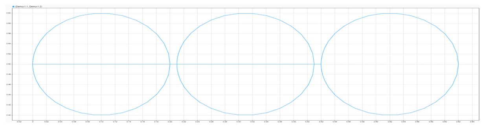
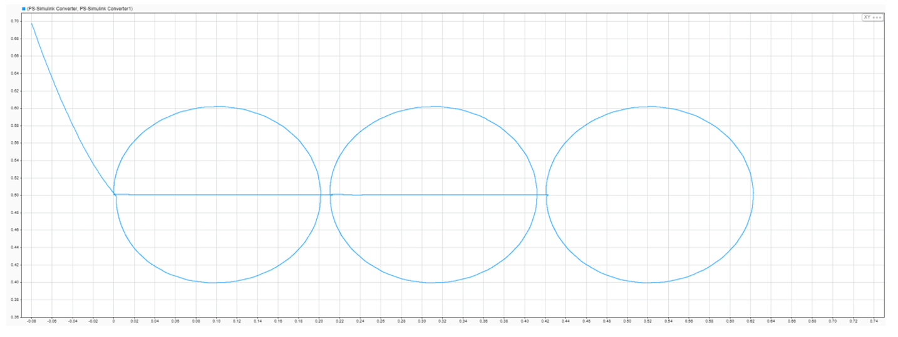
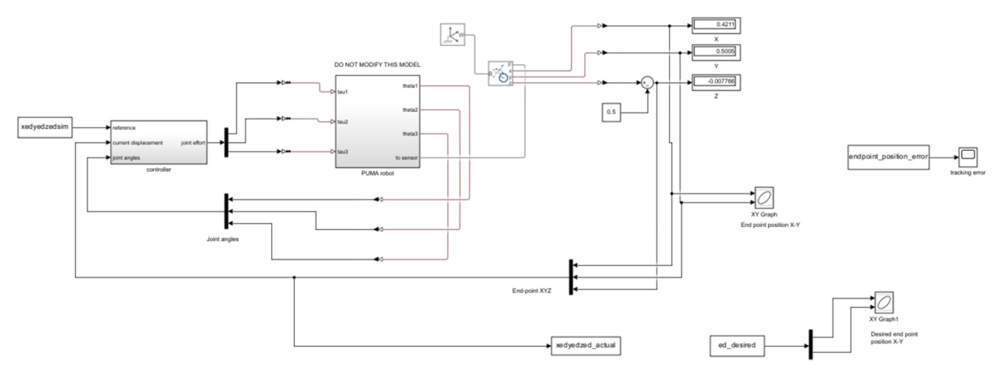
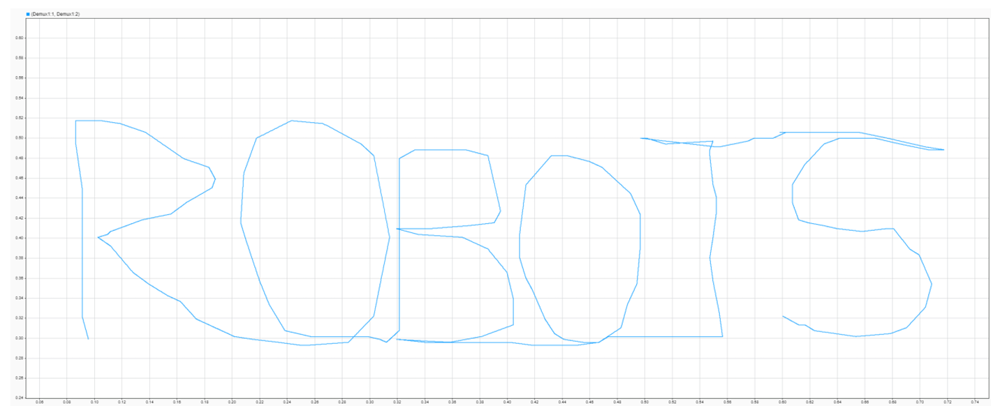
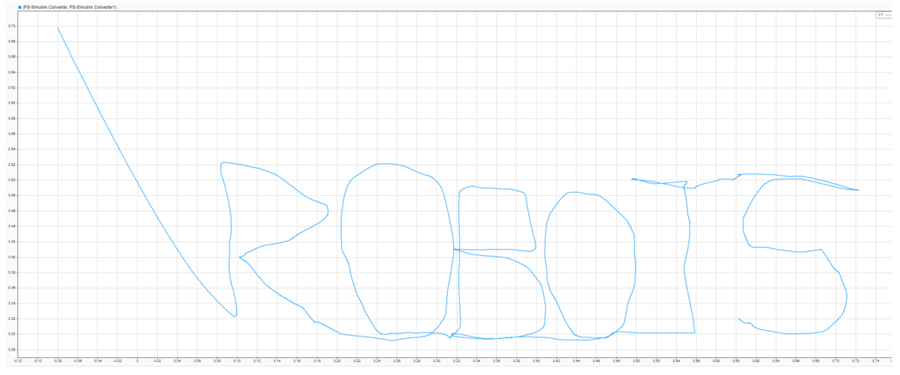
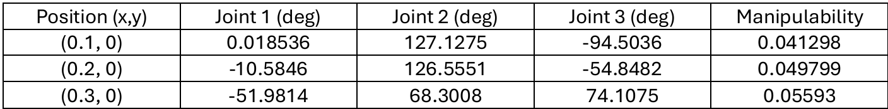
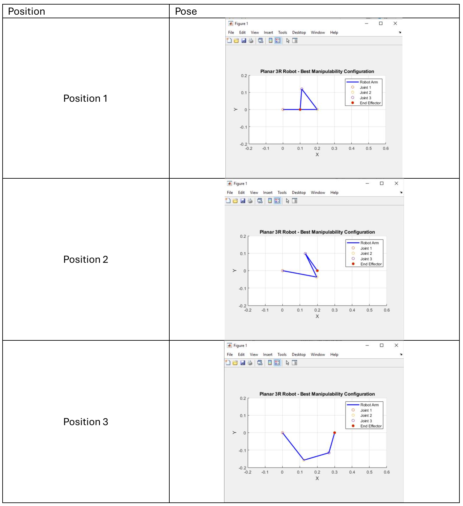

End-Effector Trajectory Control
This project implements end-point trajectory control for a simplified PUMA robot in MATLAB and Simulink, using a PID controller with Jacobian Transpose control to draw shapes and characters on a plane under gravity.
In the first part, trajectories were planned and a controller was implemented to position the end effector of a simplified PUMA robot with gravity and draw three circles. A PID controller was developed that uses Jacobian Transpose control to compute the joint effort. The controller can be seen below.

The first step was to calculate the trajectories needed for the three circles. An initial position of the robot was set up and fourth-order polynomial profiles were used to calculate the endpoint positions for a circle. The straight-line trajectory from the first circle to the second circle starting position was then calculated, and this process was repeated until a trajectory for three circles was obtained. The combined trajectory was then input into the PID controller. The PID controller took the displacement between the robot's current and target position and applied proportional, integral, and derivative control to compute the forces needed for control.

These initial results were not perfect, so additional tuning was required. After trying several different gains, final values of P=25000, I=1000, and D=1000 were settled on. These gains computed the required end-point forces, which along with the joint angles were input into the joint torque calculation function. This provided Jacobian transpose control on the system using the homogeneous transformation matrix, the calculated Jacobian matrix, and the joint torque equation with the Jacobian transpose and forces to obtain the required joint effort. The robot successfully completed all three circles within the required error margins, achieving a maximum positioning error of 1.27 cm and an RMSE of 0.95 cm against the 3 cm and 1 cm requirements respectively.

The final Simulink model can be seen below.

A video showing the simulated robot drawing these circles in Simscape can be found below.
In the following portion of the project, the same controller was applied without retuning to trace the hand-written word "ROBOTS" as a continuous single-stroke trajectory. A script was written to define a trajectory of six letters and the same controller was run on that new trajectory. The controller performed well, achieving a maximum positioning error of 2.13 cm and an RMSE of 1.00 cm, both within the required thresholds. The desired trajectory is shown first, followed by the reproduced trajectory.


The trajectory was then run on the simulated Simscape robot, as shown in the video below.
In the final part of this project, inverse kinematics was used to find joint configurations that maximize the manipulability measure while avoiding singularities for a set of given end-point positions. Theta 3 was iterated over candidate ranges, and solutions were evaluated numerically to identify the configuration with the highest manipulability at each position, with results tabulated and visualized.


It's important to note that manipulability is equal for symmetric 3R robots about the x-axis. These values and the corresponding plots could be flipped in some ways to yield the same manipulability measure.
Technical Highlights- PID control with Jacobian Transpose control
- Trajectory planning with fourth-order polynomial profiles
- Jacobian matrix derivation & end-point force mapping
- Joint torque computation & control
- Manipulability measure maximization
- Singularity avoidance via redundancy resolution
- Forward & inverse kinematics
- MATLAB & Simulink/Simscape integration
Current Location
North of Atlanta, GAUnited States of America